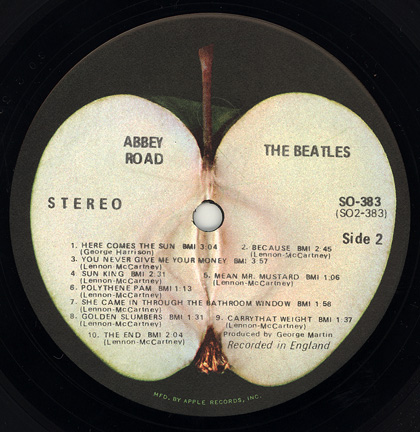

Abbey Road
Abbey Road adalah album studio ke-11 yang dirilis oleh band rock asal Inggris The Beatles. Ini adalah album terakhir yang direkam mereka, meskipun Let It Be adalah album terakhir yang dirilis sebelum pembubaran band pada tahun 1970. Pembuatan Abbey Road mulai pada April 1969, dan album ini dirilis pada 26 September 1969 di Inggris, dan 1 Oktober 1969 di Amerika Serikat.
Album ini dirilis di tengah ketegangan dalam band. Meskipun sukses secara komersial, dan menerima ulasan yang beragam dari para kritikus musik yang menemukan keaslian musik dan mengkritik efek buatan produksinya. Sejak penerimaan awal, album ini telah dilihat oleh banyak kritikus sebagai karya terbesar The Beatles dan oleh beberapa publikasi diberi peringkat sebagai salah satu album terbesar sepanjang masa. Abbey Road tetap menjadi album terlaris mereka.
Daftar lagu
sisi pertama

- Come Together
- Something
- Maxwell's Silver Hammer
- Oh! Darling
- Octopus's Garden
- I Want You (She's So Heavy)
sisi kedua
- Here Comes the Sun
- Because
- You Never Give Me Your Money
- Sun King
- Mean Mr. Mustard
- Polythene Pam
- She Came In Through the Bathroom Window
- Golden Slumbers
- Carry That Weight
- The End
- Her Majesty
- Medley
Setelah sesi rekaman untuk album usulan Get Back (kemudian dirilis sebagai Let It Be) yang tidak menyenangkan, Paul McCartney menyarankan produser musik George Martin agar band tersebut kembali bersama dan membuat album 'cara kita dulu melakukannya', bebas dari konflik yang dimulai setelah kematian Brian Epstein dan terus terbawa ke sesi untuk album White Album. Martin setuju, dengan syarat bahwa ia harus diizinkan untuk untuk memproduseri album tersebut dengan cara yang sama seperti album-album awal The Beatles. Ini akan menjadi yang terakhir kalinya band ini akan merekam dengan Martin. Dalam wawancara mereka untuk The Beatles Anthology, para anggota band yang masih hidup menyatakan bahwa, meskipun tidak satupun dari mereka yang menyebutnya 'album terakhir', mereka semua merasa pada saat ini akan sangat mungkin menjadi produk akhir Beatles dan karena itu sepakat untuk mengesampingkan perbedaan-perbedaan mereka dan 'pergi keluar pada nada tinggi'.
Dengan album Let It Be yang sebagian rampung, sesi untuk Abbey Road dimulai pada bulan April, setelah single "Old Brown Shoe"/"The Ballad of John and Yoko" selesai. Bahkan, sesi rekaman John Lennon "I Want You (She's So Heavy)" sudah dimulai pada bulan Februari 1969 di Trident Studios, dengan Billy Preston memainkan organ, hanya tiga minggu setelah sesi Get Back. Foto dari sesi ini termasuk dalam buku Get Back, yang datang bersama dengan album Let It Be tetapi tidak di film Let It Be. McCartney tercukur bersih dan Lennon telah mulai membiarkan jenggotnya tumbuh.
Sebagian besar dari album ini direkam antara 2 Juli dan 1 Agustus 1969. Setelah album ini selesai dan dirilis, proyek Get Back / Let It Be kembali diperiksa. Lebih banyak pekerjaan yang dilakukan pada album, termasuk rekaman musik tambahan. Dengan demikian, meskipun sebagian besar Let It Be direkam sebelum Abbey Road, yang terakhir yang dirilis pertama kali, dan Abbey Road adalah album terakhir yang dimiliki oleh Beatles sebelum mereka bubar. Lennon adalah hiatus dari kelompok dan bekerja dengan Plastic Ono Band selama September 1969 menjelang rilis Abbey Road, yang secara efektif sebagai tanda resmi pertama pembubaran The Beatles yang akan datang.

Dua bagian album ini adalah sebuah kompromi; Lennon ingin merilis album tradisional dengan lagu-lagu yang terpisah dan tidak terkait, sementara McCartney dan Martin ingin melanjutkan pendekatan tematik mereka dari Sgt. Pepper's Lonely Hearts Club
Band dengan memasukkan medley.
Lennon akhirnya tidak menyukai Abbey Road secara keseluruhan dan merasa bahwa album tidak memiliki keaslian, sambil menyebut kontribusi McCartney sebagai "musik untuk digali nenek" dan bukan "lagu yang
sesungguhnya" dan menjelaskan bagian medleynya sebagai "sampah ... hanya potongan-potongan lagu yang dilempar bersamaan." Saat sesi rekaman, Lennon menginginkan agar semua lagunya ditempatkan di satu sisi album, sedangkan lagu McCartney di
sisi lain.
Musikolog Walter Everett menafsirkan bahwa sebagian besar dari kesepakatan lirik medley ini sebagai "keegoisan dan kepuasan tersendiri serta keluhan keuangan di "You Never Give Me Your Money", "Mr. Mustard" yang kikir,
memegang bagian belakang dari bantal di "Carry That Weight," keinginan bahwa beberapa orang kedua akan mengunjungi mimpi-mungkin penyanyi 'satu mimpi manis' dari "You Never Give Me Your Money" dan "The End". Everett menambahkan bahwa medley
itu merupakan 'momen egois' yang dimainkan dalam konteks pusat tonal dari kunci A, sementara 'kemurahan hati' dinyatakan dalam lagu mana kunci C yang utama.
Medley ini diakhiri dengan 'kompromi besar dalam negosiasi' pada lagu "The
End", yang berfungsi sebagai coda struktural yang seimbang. Dalam menanggapi berulang-ulang kunci C-mayor pada chorus 'love you', McCartney bernyanyi dalam kesadaran bahwa memuaskan diri dengan cinta ("the love you take") karena adanya cinta
yang murah hati ("the love you make"), masing-masing dalam A mayor dan C mayor.
⬅ Album sebelumnya Menu Album selanjutnya ➡